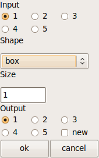

Description de l’interface graphique d’une fonction¶
Les fonctions présentes dans le menu de MediPy vont avoir une interface graphique associée. L’ensemble des boîtes de dialogue de Medimax 3 (créees par les macros GET_INT, GET_FLOAT, GET_QCM, ...) sont ici remplacées par une unique interface graphique.
Cette interface est décrite dans la docstring des fonctions python, selon la syntaxe précisée ci-dessous. Pour une fonction de seuillage prenant comme paramètres une image d’entrée, les bornes du seuillage et une image de sortie, on obtiendra l’interface suivante :

Syntaxe¶
La syntaxe à utiliser dans la docstring de la fonction une syntax XML simple. L’interface graphique est contenue dans un élément gui, et chaque élément de l’interface est décrit par un élément item avec les attributs suivants
- name : nom du paramètre correspondant de la fonction
- type : type du contrôle relié à ce paramètre
- initializer (optionnel) : paramètre d’initialisation du contrôle
- role (optionnel) : rôle du paramètre (vide, output ou return)
- label : label associé
- tooltip (optionnel) : tooltip associé
L’attribut role sera absent si le paramètre concerné n’est pas modifié par la fonction. Il vaudra output s’il est modifié par la fonction (i.e. c’est un paramètre de sortie) ; il vaudra enfin return s’il s’agit d’une des valeurs de retour de la fonction.
Exemples¶
Des exemples valant mieux qu’un long discours, voici l’exemple d’une fonction de seuillage :
def binary_threshold(input=None, min=None, max=None, inside=None, outside=None) :
""" Return a binarized version of the input image.
<gui>
<item name="input" type="Image" label="Image"/>
<item name="min" type="Float" label="Minimum value"
tooltip="Minimum value in threshold (included)"/>
<item name="max" type="Float" label="Maximum value"
tooltip="Maximum value in threshold (included)"/>
<item name="inside" type="Float" initializer="1" label="Inside value"
tooltip="Value taken by pixels inside the image"/>
<item name="outside" type="Float" initializer="0" label="Outside value"
tooltip="Value taken by pixels outside the image"/>
<item name="output" type="Image" initializer="output=True"
role="return" label="Output image"/>
</gui>
"""
pass
Le champ input crée un contrôle de type Image, qui va permettre de choisir entre plusieurs images grâce à des radio-buttons. Les champs min et max ont une syntaxe similaire, mais ajoutent un tooltip. L’interface générée est la suivante :
La fonction suivante montre l’utilisation du paramètre d’initialisation du contrôle :
def erode(input, erode_value, *args, **kwargs):
""" Binary dilation of an image using a name of a structuring element and a
radius, or a structuring element.
<gui>
<item name="input" type="Image" label="Input"/>
<item name="erode_value" type="Float" initializer="1" label="Erode value"/>
<item name="shape" type="Enum" initializer="('ball', 'box','cross')"
label="Shape"/>
<item name="radius" type="Int" initializer="1" label="Radius"/>
<item name="output" type="Image" initializer="output=True" role="return"
label="Output"/>
</gui>
"""
pass
Le paramètre d’initialisation de radius est optionnel : un contrôle de type int peut être initialisé sans paramètre, mais on souhaite un élément structurant de taille au moins 1. Le paramètre d’initialisation de shape est en revanche obligatoire : on ne peut pas initialiser une liste de choix sans lui donner la liste des valeurs qu’elle peut prendre. L’interface générée par cette docstring est la suivante :
On peut également spécifier un intervalle pour les valeurs prises pour un contrôle de type Int grâce au paramètre range. A la création de l’interface graphique, si le paramètre range est renseigné, on ajoute alors une barre de défilement au contrôle. En règle générale, on peut également choisir de stocker le résultat du traitement dans une nouvelle image en cochant le bouton new du paramètre Output de l’interface graphique. On peut également spécifier l’intervalle en fonction d’un des autres éléments de l’interface graphique comme dans l’exemple ci dessous :
def something(input, value, output) :
""" Do something
<gui>
<item name="input" type="Image" label="Input"/>
<item name="value" type="Int"
initializer="range = (${input}.data.min(), ${input}.data.max())"
label="Value"/>
<item name="output" type="Image" role="output"
initializer="output = True" label="Output"/>
</gui>
"""
pass